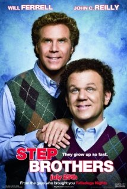
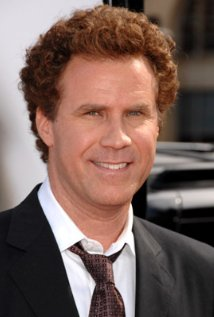

Summary
Brennan Huff and Dale Doback are both about 40 when Brennan's mom and Dale's dad marry. The sons still live with the parents so they must now share a room. Initial antipathy threatens the household's peace and the parents' relationship. Dad lays down the law: both slackers have a week to find a job. Out of the job search and their love of music comes a pact that leads to friendship but more domestic disarray compounded by the boys' sleepwalking. Hovering nearby are Brennan's successful brother and his lonely wife: the brother wants to help sell his step-father's house, the wife wants Dale's attention, and the newlyweds want to retire and sail the seven seas. Can harmony come from the discord?
Cast Names
- Will Ferrell - Brennan Huff
- John C. Reilly - Dale Doback
- Mary Steenburger - Nancy Huff
- Richard Jenkins - Dr. Robert Doback
- Adam Scott - Derek
- Kathryn Hahn - Alice
- Andrea Savage - Denise
Lead Actor: Will Ferrell

Bio
A graduate of the University of Southern California, Will Ferrell became interested in performing while a student at University High School in Irvine, California, where he made his school's daily morning announcements over the public address system in disguised voices. He started as a member of the Los Angeles comedy/improvisation group The Groundlings, where fellow cast members Ana Gasteyer, Maya Rudolph and former "Saturday Night Live" (1975) repertory players such as Laraine Newman, Jon Lovitz and Phil Hartman began their careers. It was there he met Chris Kattan and the two became good friends and both went on to "Saturday Night Live" (1975) later. He has also appeared on several television programs, including "Strangers with Candy" (1999), "Grace Under Fire" (1993) and "Living Single" (1993) during his time at The Groundlings. Will also lent his voice to the armless and legless dad of cartoon family "The Oblongs".In 1995 he became a feature cast member at "Saturday Night Live" (1975) during the show's rapid re-casting. He was declared quite possibly the worst cast member ever during his first season. However, his talents of impersonations and range of characters shot him forward to making him arguably the greatest "Saturday Night Live" (1975) cast member ever. During his seven year run he is one of the few cast members to ever be nominated for an Emmy for a performance and played George W. Bush during the 2000 elections. He's appeared in every "Saturday Night Live" (1975) movie since his premiere on the show in 1995. In 2002 he left "Saturday Night Live" (1975) and was the only cast member to ever receive a farewell from all the current cast members at the end of the season finale show. Since leaving the show Will has pursued a career in films. In 2000 he married and now lives in L.A.